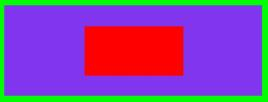
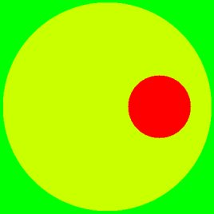
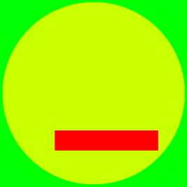

Automatic Bitmap Generators.
In order to describe the cross sections of the transmission lines, you can either use a graphics programme and draw it manually, or one of several programmes which will be written in order to generate bitmaps more quickly. Currently several automatic bitmap generators have been written, which handle some of the more common combination of circular and rectangular conductors. Note circ_in_circ which handles the eccentric coax, with a circular inner and outer, was written to test atlc, - since there is an exact analytical formula for that case, there is no point in simulating it. Unix manual pages are available for all the programmes:
rect_in_rect 268 100 10 40 25 200 100 45 1.0 4.8 > pcb2.bmp
For a rectangular conductor placed anywhere
inside another rectangular conductor.
Handles 2 dielectrics | |
rect_cen_in_rect 268 100 100 50 4.8 > central.bmp
For a rectangular conductor placed centrally
inside another rectangular conductor. |  |
circ_in_circ 100 30 25 1.006 > off-centre2.bmp
For a circular conductor inside another circular conductor. |  |
circ_in_rect 20 200 100 50 -5 10.2 > cir.bmp
For a circular conductor inside a rectangular conductor. | |
rect_in_circ has not been finished yet.
But this is what it will do. |  |
make_coupler 2.0 1.0 1.0 coupler.bmp
For a directional coupler |  . . |
sym_strip 1 201 301 wide.bmp
For a thin strip line between two wide conductors | . |
| | |
Note, programmes sym_strip and make_coupler both produce inner conductors that are only one pixel high. This is since exact analytical solutions are only known for infinitely thin conductors. It is often difficult to see the inner conductors unless you zoom into a bitmap. They are shown very exagerated in these diagrammes.
Slightly more comprehensive documemtation exists for rect_in_rect
The programmes such as rect_in_rect will by default produce a bitmap of around 500 kb, which should be analysed in about 3 minutes at most, depending on the speed of your computer. You can increase or decrease the size of the bitmap, by use of the -b option.
The output from all these programmes except sym_strip and make_coupler is sent to standard output. Since this is binary data, it will possibly screw up your terminal unless it is redirectected to a file. In each case, you can either use the > sign and put directly into a file, or use the -o option.
sym_strip is a bit of an odd one out, in that instead of the programme automatically determining the optimal bitmap dimensions, sym_strip must be provided with them. Whereas all the other programmes can accept floating point numbers for the dimensions of the conductors, sym_strip will only accept integer numbers and translates them directy to the bitmap size. It's also odd in that it does not write to standard output (although netiher does make_coupler). Some work to bring all the programmes in to line with each other, with a common interface will be started soon.
atlc is written and supported by Dr. David Kirkby (G8WRB) It it issued under the GNU General Public License
Return to the atlc homepage